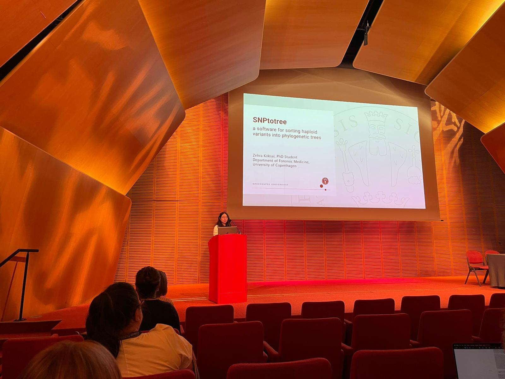
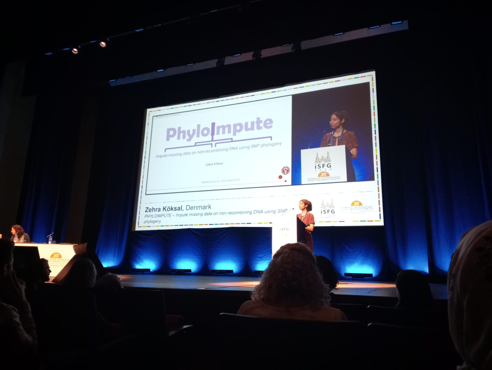

SNPtotree
SNPtotree identifies which biallelic variants on non-recombining DNA have phylogenetic properties based on sequencing data and establishes a phylogenetic tree of these variants.
Installation and Getting Started
Command-line tool is available on github including installation and getting started documentation:
You can also follow this step-by-step tutorial:
Communication
Peer-reviewed publication: Köksal, Z.; Børsting, C.; Gusmão, L.; Pereira, V. SNPtotree—Resolving the Phylogeny of SNPs on Non-Recombining DNA. Genes 2023, 14, 1837. https://doi.org/10.3390/genes14101837
Oral presentation at ISMB/ECCB 2023:
Poster presentation at 8th Annual Danish Bioinformatics Conference 2024:
Case Studies
Generating phylogenetic tree of Native American haplogroup Q (Aug 2024): Application of Targeted Y-Chromosomal Capture Enrichment to Increase the Resolution of Native American Haplogroup Q
Generating phylogenetic tree of Finnish haplogroup N (Oct 2024): Y chromosome sequencing data suggest dual paths of haplogroup N1a1 into Finland
PhyloImpute
PhyloImpute imputes missing SNP data on haploid DNA by leveraging the SNPs’ phylogeny in a selected phylogenetic tree. The user can further explore the data and its quality. This includes a haplogroup prediction that is highly customizable using a preinstalled or custom phylogenetic tree. The user can identify sample mixtures, backmutations and recurrent mutations. Finally, sequencing errors and erroneous/incomplete tree structures can be identified.
Installation and Getting Started
Command-line tool is available on github including installation and getting started documentation:
The software is also available with a graphical user interface for Windows. Download the software by clicking on the button, unzip the folder, double-click the .exe file called "phyloimpute_windows - Shortcut" and navigate through the graphical user interface.
Latest version:
Latest updates: Inclusion of phylogenetic tree Y-DNA Tree ISOGG 2019/2020, Bug fixes
Previous versions:
Communication
Oral presentation at ISFG 2024:
Blogpost for Open Bioinformatics Foundation 2024: